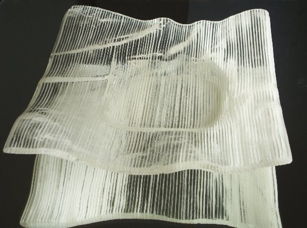

Self Portrait in glass. Fused in graphic printing process.
| |
Lasinen omakuva graafisella tekniikalla Self Portrait in glass. Fused in graphic printing process. |
|
Olen 1936 syntynyt taiteentekijä Halikossa.
Taidekäsitukseni on syntynyt Wirkkalan ja Vuokon kulta-aikana.
Edelleen pyrin yksinkertaiseen selkeyteen töissäni. Etsin ratkaisuja jotja kestävät katsia
pidemmänkin ajan.
|
I am an artist in Halikko, Finland. Born 1936. My art thinking was founded in 60's, the dolden era of Finnish design. I still strive for simple clarity in my works. I am looking for solutions that can please the eye for a length of time. Art is my third career which I started just before retirement age. Now, when I am retired, my daily bread is not dependent of sales. I am free to work following J.S. Bach's words "For the honor of God and the pleasure of the soul". |
| Galleriasivut Gallery Pages |
|
|  |
Lasitaidetta Glass Art |
|
Veistoksia Sculptures |
|
|
Pastellimaalauksia Pastel Paintings |